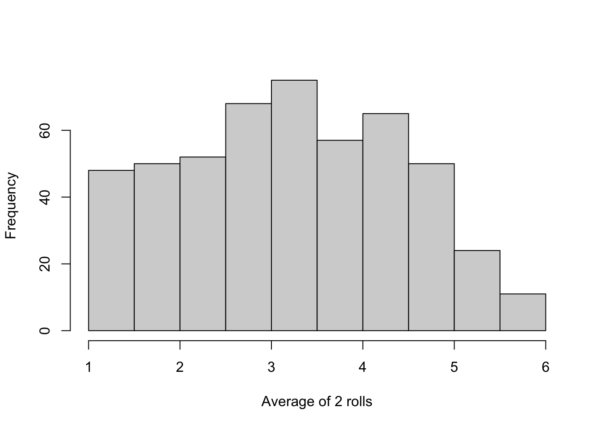

2+2[1] 4Math expressions are generally accepted in R. For instance if you type 2+2 the console will output 4.
2+2[1] 4Now, try -, *, /, and ^ (for raising to a power). Besides that, there are many built-in math functions - check some of them here.
What you will mostly do is to create objects. For example:
odd<-c(1,3,5,7,9,11)
odd[1] 1 3 5 7 9 11odd is a vector containing some odd numbers. A few details: c() concatenates its arguments (odd numbers from 1 to 11) to form a vector named odd. Another way to do it is using seq() :
odd<-seq(from=1, to=11, by=2)
odd[1] 1 3 5 7 9 11You can easily apply functions to objects:
mean(odd)[1] 6sum(odd)[1] 36max(odd)[1] 11min(odd)[1] 1Logical tests are common when dealing with data and now is a good time to get some practice. Test equality with == and inequality with <=, <, !=, >, or >=.
4/2==2 # Is 4 divided by 2 equal to 2? [1] TRUE2!=3 # Is 2 different than 3? [1] TRUE2>10/5 # Is two greater than 10 divided by 5? [1] FALSEIt is very common to check whether something belongs to a group, and %in% is very helpful in this case:
2 %in% odd # 2 does not belongs to odd[1] FALSEFinally, we need to talk about & (and) and | (or):
2 %in% odd | 3 %in% odd # does 2 or 3 belong to odd?[1] TRUE2 %in% odd & 3 %in% odd # does 2 and 3 belong to odd?[1] FALSEThroughout your research, you will constantly work with strings. Any value written within a pair of single or double quotes in R is treated as a string. Below you have stored Hi and Marcelino.
hi<-"Hi"
name<-"Marcelino"The function paste() puts things together with any separator:
paste(hi, name, sep=" ") # separating strings with space[1] "Hi Marcelino"Another useful function is sample(). It takes a sample of the specified size from the elements of a vector using either with or without replacement. Before using sample(), to make sure we get the same results, lets start the code chunk with set.seed(123).
set.seed(123)
numbers<-seq(1:1000)
sample(numbers, size=2, replace = TRUE) # a random sample size 2 of numbers from 1 to 1000 (with replacement)[1] 415 463sample(numbers, size=10, replace=FALSE) # a random sample size 10 of numbers from 1 to 1000 (without replacement) [1] 179 526 195 938 818 118 299 229 244 14You can also use a sample with strings:
fruits<-c("apple", "orange", "lime")
sample(fruits, size=2) ## replace is False by default [1] "orange" "apple" sample() to simulate a fair coin toss 6 and 1,000 times. Does it look like a fair coin?Hint: create a vector c(“H”, “T”) and use sample() with different sizes. Should you use replace = False or replace = True?
\[E[X]= \frac{1}{6}[1+2+3+4+5+6] = 3.5\]
According to the Law of Large Numbers, if you play long enough, the sample average will get close to 3.5. Now, let’s look at the histograms for each set of averages according to the sample size (number of rolls). We start rolling a dice two times, and we repeat this process 500 times. The resulting distribution is called “the sampling distribution of the sample mean.”
roll<-sample(1:6, size=2, replace=TRUE)
mean(roll)[1] 2.5Using the function replicate() to repeat this process 500 times and plotting the histogram using hist():
hist(replicate(500,mean(sample(1:6, size=2, replace=TRUE ))), main=" ", xlab = "Average of 2 rolls")
Your turn! Roll dice 100 times and repeat the process again, plotting the histogram. Does this distribution look familiar?
The table below summarizes the data types you usually face when working in R:
| Type | Definition |
|---|---|
| Double | A vector containing real values |
| Integer | A vector containing integer values |
| Character | A vector containing character values (e.g., “Dog”, “1”) |
| Logical | A vector containing logical values (TRUE, FALSE) |
| Factor | Factors are used to describe items that can have a finite number of values (“male”, “female”) |
Factors look like character vectors, but possess a levels attribute that assigns names to each level, or distinct value, in the vector.
Use the str() function to identify data types within data structures.
You can create a vector by combining elements of the same type together using the concatenate function c().
vec1<-c(-10:10)
vec1 [1] -10 -9 -8 -7 -6 -5 -4 -3 -2 -1 0 1 2 3 4 5 6 7 8
[20] 9 10What happens if you have a string and numbers in the same vector?
vec2<-c(-10:10, "cat")
vec2 [1] "-10" "-9" "-8" "-7" "-6" "-5" "-4" "-3" "-2" "-1" "0" "1"
[13] "2" "3" "4" "5" "6" "7" "8" "9" "10" "cat"More on data types later! You can use [ ] to locate elements within vectors:
vec2[22][1] "cat"One additional useful function is which() . If you want to find out the position of numbers greater than zero within vec:
which(vec1>0) [1] 12 13 14 15 16 17 18 19 20 21If you want to find out who are these numbers:
vec1[which(vec1>0)] [1] 1 2 3 4 5 6 7 8 9 10What happens when you try this using vec2 instead?
The matrix is a two-dimensional data structure composed of elements of the same data type.
matrix1<-matrix(1:4, ncol=2, nrow=2)
matrix1 [,1] [,2]
[1,] 1 3
[2,] 2 4Let’s multiply two matrices:
matrix2<-matrix(6:9, ncol=2, nrow=2)
matrix3<-matrix1 %*% matrix2To find out elements of a matrix you can still use [ ] :
matrix3[2,2][1] 52A list is a general form of a vector, where the elements don’t need to be of the same type or dimension. You can easily combine arguments:
list1<-list(seq(1:10), c("Cat", "Dog"), matrix(1:6, ncol=3, nrow=2))
list1[[1]]
[1] 1 2 3 4 5 6 7 8 9 10
[[2]]
[1] "Cat" "Dog"
[[3]]
[,1] [,2] [,3]
[1,] 1 3 5
[2,] 2 4 6Given the output you are seeing, how to locate the elements within a list?
R usually refers to datasets as dataframes. A data frame is like a list of vectors combined into a matrix-like structure. You can have different columns of different types. Let’s create a dataframe:
GDP<-c(10000, 11000, 12431, 500 )
country<-c("Bolivia", "Brazil", "Chile", "Argentina")
df<-data.frame(GDP, country)
df GDP country
1 10000 Bolivia
2 11000 Brazil
3 12431 Chile
4 500 ArgentinaIn this example, we will use data from the RAND Health Insurance Experiment (HIE), and there are two datasets. Here you have demographic information about the subjects in the study and also health variables (outcomes) both before and after the experiment. The other file (here) has information about health care spending. Finally, here you have a summary of the RAND HIE. To read .RDS files, use the readRDS() function.
rand_sample<-readRDS("rand_sample.RDS")
rand_spend<-readRDS("rand_spend.RDS")If you want to see the first values on that dataset, you can use the function head( ) or use View(rand_sample) to open the dataframe in a new tab.
#head(rand_spend,5)
#View(rand_spend)Besides the column plantype, which identifies the assigned insurance group of each individual, the variables that we are looking for are displayed below:
| Variable | Definition |
|---|---|
| rand_sample file | |
| female | Female |
| blackhisp | Nonwhite |
| age | Age |
| educper | Education |
| income1cpi | Family Income |
| hosp | Hospitalized last year |
| ghindx | General Health Index (before) |
| cholest | Cholesterol (mg/dl) (before) |
| systol | Systolic blood pressure (mm Hg) (before) |
| mhi | Mental Health Index (before) |
| ghindxx | General Health Index (after) |
| cholestx | Cholesterol (mg/dl) (after) |
| systolx | Systolic blood pressure (mm Hg) (after) |
| mhix | Mental Health Index (after) |
| rand_spend file | |
| ftf | Face-to-face visits |
| out_inf | Outpatient expenses |
| totadm | Hospital admissions |
| inpdol_inf | Inpatient expenses |
| tot_inf | Total expenses |
In case you have .csv, you might want to use read_csv(). Also, check the package readxl (here) if you need to load excel files.